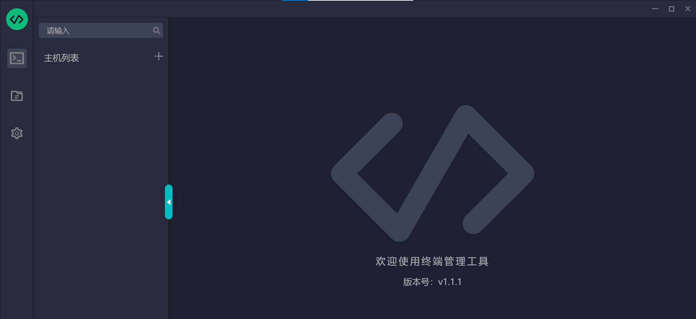
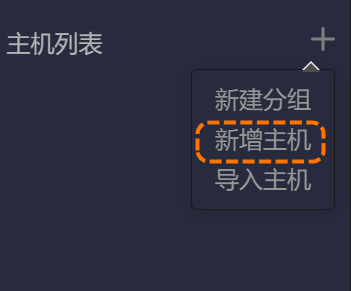

其他工具
除前文所述工具外，IDMVS还支持HIKTerm日志采集工具和IDPS工具。HIKTerm日志采集工具可提供实时采集日志、远程系统访问和发送调试指令功能，适用于读码器深度问题排查。IDPS工具是专为超小型智能读码器开发的客户端软件，支持串口和设置码双配置模式，涵盖参数设置、图像预览、查看读码结果和数据交互等功能。
HIKTerm日志采集工具
HIKTerm日志采集工具类似SecureCRT串口调试工具，主要用于实时收集读码器的日志信息、远程进入系统、发送调试指令等功能。相较于IDMVS的读码器日志功能，HIKTerm更适合高级调试与问题追踪。二者对比如下。
|
日志工具 |
使用场景 |
特点 |
|---|---|---|
|
HIKTerm |
|
|
|
读码器日志 |
从mnt/cfg/log等路径导出读码器日志文件，适合常规日志导出。具体介绍参见读码器日志。 |
运行日志，记录固定日志信息 |
使用HIKTerm工具的操作步骤如下。
-
单击菜单栏的，可自动跳转到HIKTerm工具所在目录。
-
将HIKTerm压缩包解压到当前文件夹。
-
进入解压后的文件夹，双击运行Terminal.exe文件后进入工具主界面。

图 1 HIKTerm工具主界面 -
单击主机列表右侧的选择新增主机。

图 2 新增主机 -
配置以下主机连接信息。
-
连接方式：仅经济型极小型智能读码器选择telnet，其他智能读码器选择ssh。
-
IP：输入需要收集日志信息的读码器IP地址。
-
用户名：输入“root”。
-
日志路径：选择日志路径。
-
是否要记录日志：选择“是”。
说明未提及的参数保持默认即可。
图 3 配置主机连接信息 -
-
单击确认，完成主机新增。
-
在主界面主机列表双击刚添加的主机，进入设备控制台。
-
单击下方相机日志标签页，回车开始实时记录日志。
图 4 相机日志 -
问题复现后，HIKTerm会将实时采集的日志自动保存在设置的日志路径下。请将该文件打包发送给技术支持，以便进一步分析处理。
 选择
选择

HIKTerm必须持续运行。若出现网络中断或读码器断电重启，需手动重新连接主机。
IDPS工具
IDPS是一款专为超小型智能读码器开发的客户端软件，主要用于读码器的参数配置、采集图像预览、读码结果查看以及数据交互。软件提供串口配置、设置码配置2种配置方式，可适用于串口、离线不同的应用场景。具体介绍和使用方式参见海康机器人IDPS智能读码器客户端用户手册。